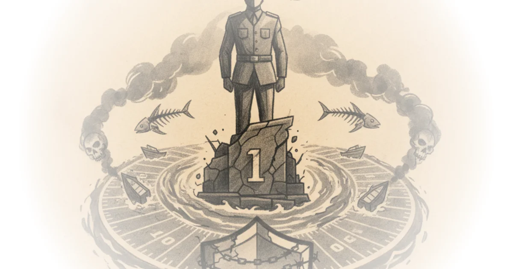
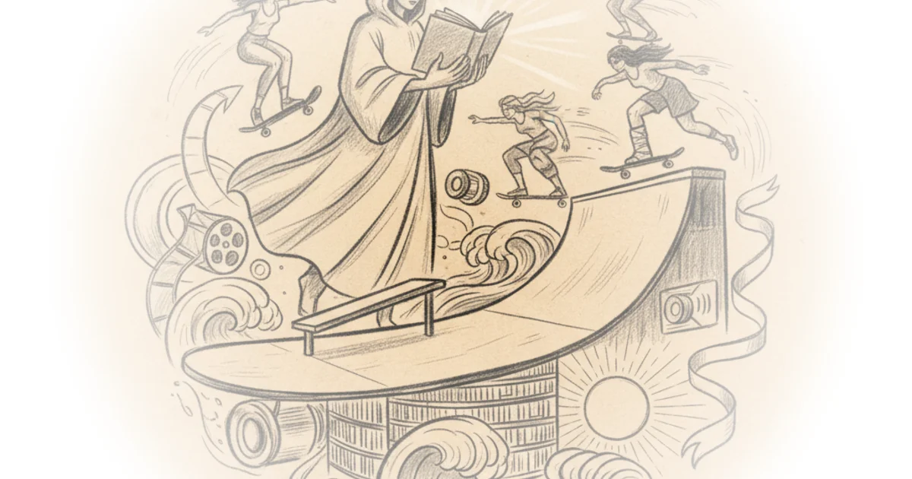
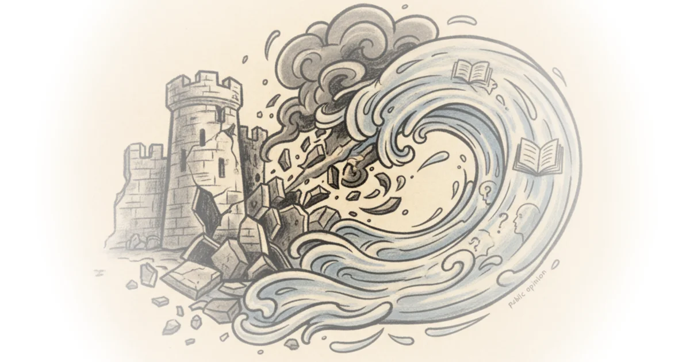

Republicans in the era of late trumpism Public Notice · Public Notice ·Dec 3, 2025 · 10 min read · Media
The 10 best tv shows of 2025 Tom van der Linden · Like Stories of Old ·Dec 2, 2025 · 23 min read · Media
Department of war crimes Judd Legum · Popular Information ·Dec 2, 2025 · 8 min read · Media 
This is what a white supremacist administration looks like Public Notice · Public Notice ·Dec 2, 2025 · 14 min read · Media
Monopoly round-up: Is the era of populist antitrust over? Matt Stoller · ·Nov 30, 2025 · 17 min read · Media
Meet the librarian resurrecting the lost women of skateboarding The Walrus · ·Nov 30, 2025 · 18 min read · Media 
Rkul: Time well spent, 11/27/2025 Razib Khan · Unsupervised Learning ·Nov 27, 2025 · 16 min read · Media
Liking clear writing isn't a fetish, actually! Bentham's Bulldog · ·Nov 27, 2025 · 11 min read · Media
What can psychoanalysis tell US about cyberspace? Slavoj Žižek · ŽIŽEK GOADS AND PRODS ·Nov 26, 2025 · 28 min read · Media
Leaked phone calls throw scrutiny on witkoff’s pro-Kremlin positions (updated) Laura Rozen · Diplomatic ·Nov 25, 2025 · 8 min read · Media
What captures our attention in an algorithmic age? A statistical analysis Daniel Parris · ·Nov 25, 2025 · 11 min read · Media
India accused this Canadian of a terror attack in Ottawa. Did the incident even happen? The Walrus · ·Nov 25, 2025 · 13 min read · Media
Tennessee public libraries close for inspired book purge Judd Legum · Popular Information ·Nov 25, 2025 · 5 min read · Media
Are the epstein survivors creating false memories? Michael Tracey · ·Nov 24, 2025 · 17 min read · Media
Roblox is a problem — but it’s a symptom of something worse Casey Newton · Platformer ·Nov 24, 2025 · 16 min read · Media
The quiet king of Japanese stop motion Various · Animation Obsessive ·Nov 23, 2025 · 18 min read · Media
Two new polls show learning about policies moves public opinion toward democrats G. Elliott Morris · G. Elliott Morris ·Nov 23, 2025 · 10 min read · Media 